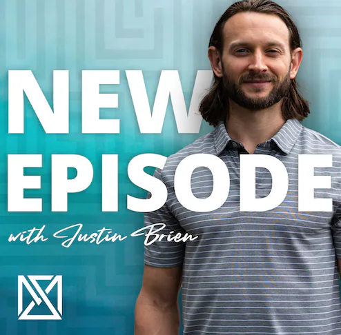

B855 · The Secrets of Spinal Health
Hi {first_name},
If you've been looking for knowledge in preventing or healing physical body pain, this is the episode for you. We focus a lot on back pain - common causes, traditional remedies, and Justin's approach to healing that you can start implementing at home today. The methodology we discuss in this episode has become an absolute staple for me in my recovery, performance, and healing.
In Ep. #7 of The Path Podcast, Justin Brien and I discuss:
There are some incredible free gifts both Justin and I give out when you listen and subscribe to the show - one of which is a detailed tutorial on the #1 Solution for Low Back Pain. This is arguably THE most important ELDOA posture you can do to prevent or get out of backpain (listen to the show for details on how to get it).  Click here to listen on Spotify. Click here to listen on Apple.
Yours in health and strength, Mike |